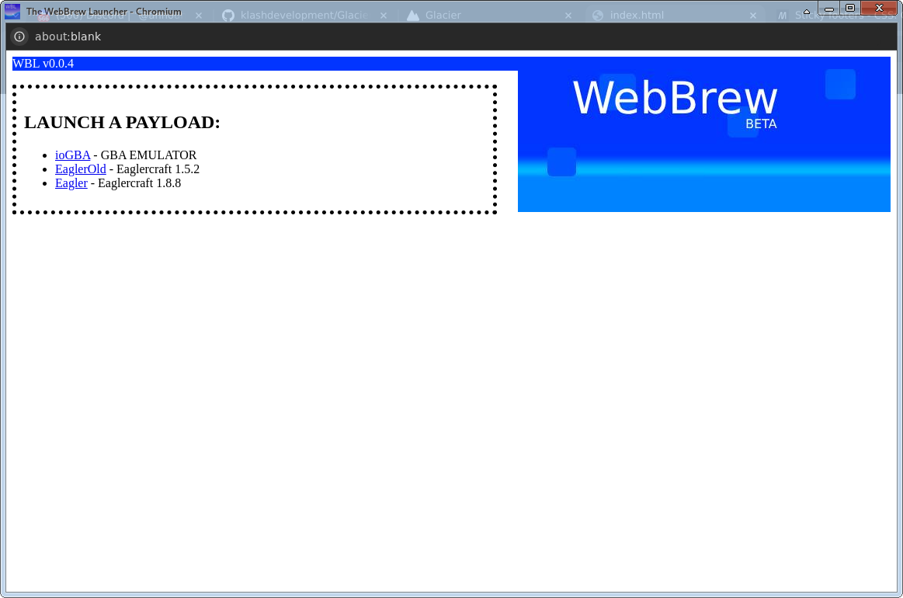
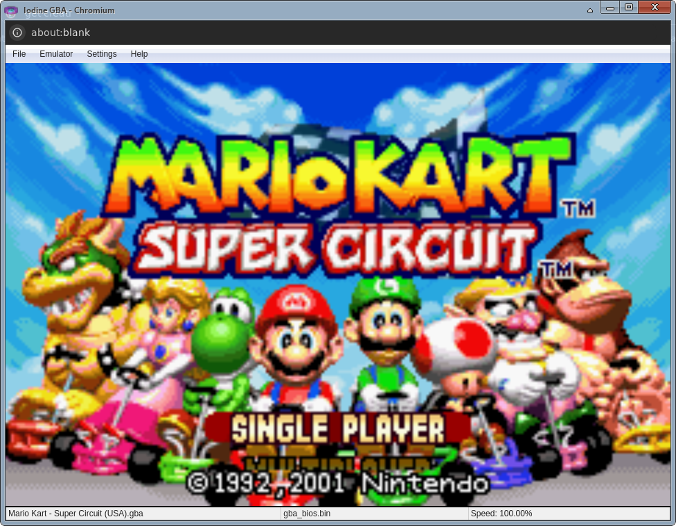
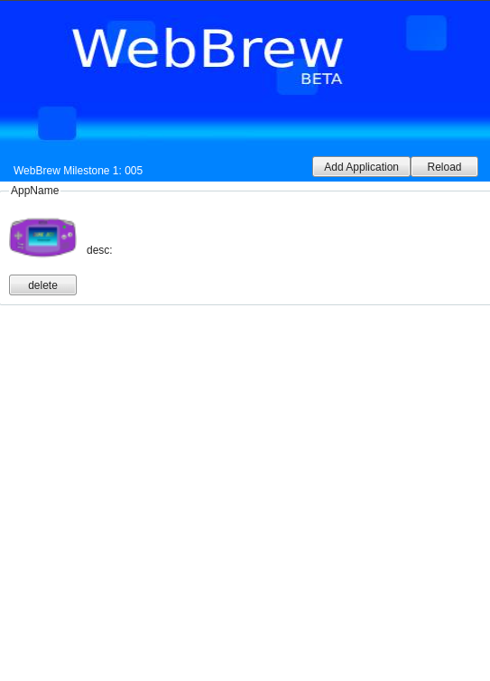
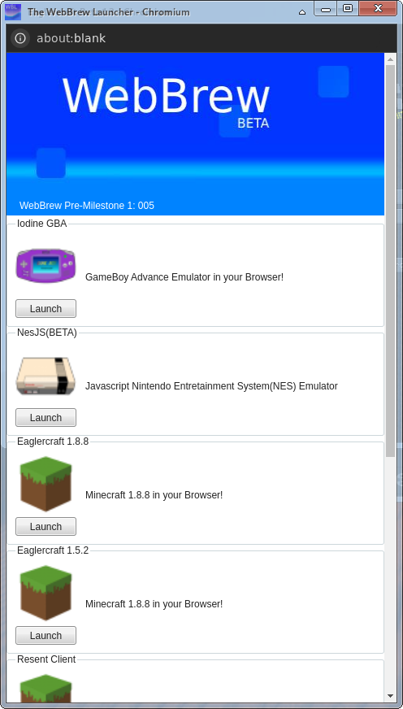

If you want to skip my yap, press Continue
To preface this, let me say thank you to all the original WebBrew beta testers (in modern discord usernames):
The project couldn't have gone out of the prototype stage faster without you guy's help.
[LOST MEDIA] Has been lost sometime between release and now
[Available on GH] available in the WebBrew releases archive here.
Release Date: 9/16/2023
The first iteration of the WebBrew Launcher. Only had IodineGBA
These older WebBrew releases focused on testing the ABE Payload Loader.
Changelog
Image of the first WBL (its from a later release, but it still looked like that at the time)
Release Date: Somewere after p001 but before October (WB was getting many consecutive releases at the time, and since the files are lost, I cant get a definitive release date)
Small update, added eaglercraft
Changelog
Release Date: somewere between the last release and 12/17/2023
While the original files are lost, WebBrew p004 still has some of those files intact. Ill release a replacement with most of those files in the archive GH (see the key above)
This version added a completely new IodineGBA gui. Its desktop app design inspired most custom WebBrew guis not only in the prototype era, but in the modern WebBrew/WasmNix era as well!
Changelog
Image of the new IodineGBA
Release Date: 12/13/2023
The first release that still remains intact! This ones more of a demo than a release, tho.
This demo showed of a prototype of the gui found in p005. It also showed some new apps that were being tested for the next release (including nesjs).
Changelog
Image of the prototype p005 gui
Release Date: 12/17/2023
To clarify a few things first, this section talks about vanilla p005 WITHOUT the extended support packs or AubMas 2023!
Finally, weve reached the version that actually matters. p005 is the first major WebBrew update since p001. It added a decent amount of Eaglercraft clients (originally provided by the Eaglercraft-Archive GH organization). It also added NesJS, a lightweight NES emulator that works even on the sh*tiest devices ive run WebBrew on.
Also, we got a finished version of the new GUI!
Changelog
Fully realized 005 gui
